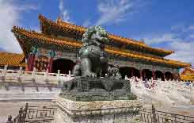
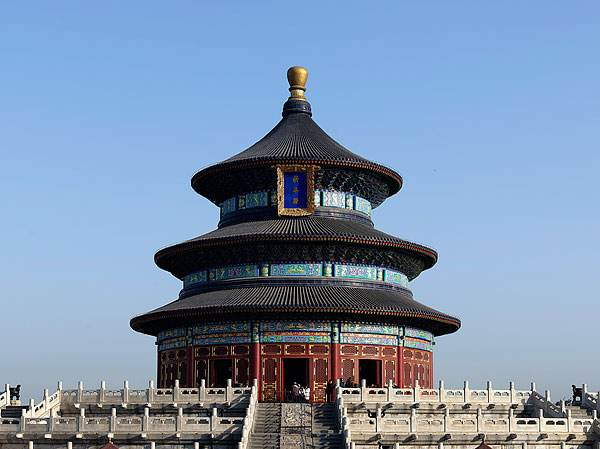
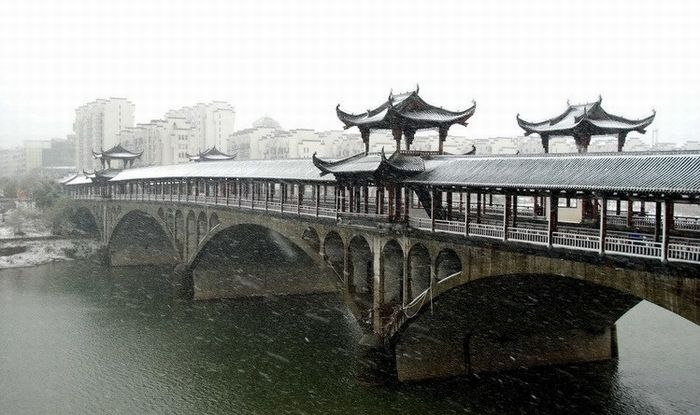
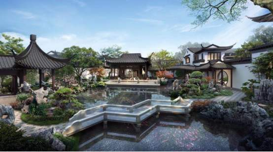
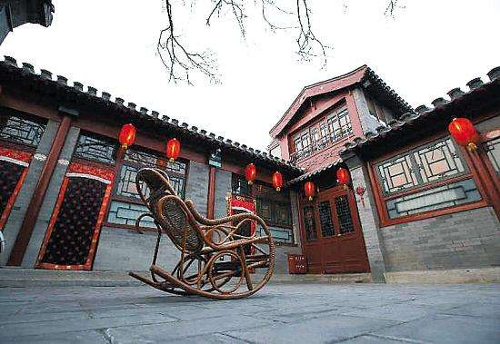

前言
汉族由于分布地区广大，其传统住房因地区不同而有不同的样式。汉族建筑布局的特点一般是平而向纵深发展，分上房下房、正房侧房、内院外院，楼最高不过二层，往往形成左右严格对称，庭院与建筑物融为一体，封闭独立的住宅建筑群汉族建筑独树一帜，有重大成就的是古典园林建筑。汉族居房建筑的民族形式为斗拱挑檐的木结构，俗称“大屋顶”。这种民族形式的住房建筑，最早萌芽于半坡遗址草泥木柱网结构和河姆渡遗址干栏式榫卯结构的房屋。
宫殿建筑
中国传统文化注重巩固人间秩序，与西方和伊斯兰建筑以宗教建筑为主不同，中
国建筑成就最高、规模最大的就是宫殿。宫殿建筑为汉族建筑之精华。北京紫禁
城为明代修建，清承明制，有所增益。宫殿是帝王处理朝政或宴居的建筑物，宫
殿是帝王朝会和居住的地方，规模宏大，形象壮丽，格局严谨，，突现王权的尊
严。宫殿装饰色彩，屋顶多用金黄色，立柱门窗墙垣等处多用赤红色装饰，檐枋
多施青蓝碧绿等色，衬以石雕栏板及石阶之白玉色，形成鲜明的色彩对比。殿堂
建筑以木构架支撑，柱底下有石柱础，砖修墙体北、西、东三面维护，坐北朝南。

坛庙建筑
坛庙建筑是汉族祭祀天地日月山川祖先社稷的建筑，有天坛，地坛、日坛、月坛、文
庙、武庙、泰山岱岳庙、嵩山嵩岳庙、太庙，各地还有祭社稷的庙，都充分体现了汉
族作为农业民族文化的特点。坛庙建筑的布局与构建原构与宫殿建筑一致，只是建筑
体制略有简化，色彩上也不能多用金黄色。其它佛寺、道观的建筑原则与平面布局都
同于宫殿建筑，只是规模较小，并且在装饰及室内摆设上带有各自的宗教色彩。寺、
观内建有对称的钟楼和鼓楼；佛寺在佛殿之前还建佛塔，供奉佛舍利。

桥梁建筑
汉族建桥有悠久的历史与高超的技术。所建桥梁依结构区分，有梁式桥、拱桥、绳
桥。梁式桥于水上架梁作桥，有木桥、石桥、木石混合桥、铁柱桥、浮柱桥、浮桥、
飞桥等型制。这一类桥两侧大都设有钩栏，桥上或建亭，或作桥屋，形如阁道，还
有在桥上建楼的，例如杭州于南宋时修建的丰乐桥。拱桥以石券作拱修造，最著名
的石拱桥是隋代李春造的赵州桥，历1300余年，今仍完好可行。绳桥是用竹索或铁
索悬于河上作桥，如明代朱家民所建的贵州盘江桥。

园林建筑
中国古典园林，是汉民族历史文化中的瑰宝。它是把自然的和人造的山水以及植物、
建筑融为一体的游赏环境。在世界三大园林体系中，中国园林历史最悠久，内涵最
丰富。自从文人参与园林设计以来，追求诗的涵义和画的构图就成为中国园林的主
要特征。画家造园者更多，特别是明清时期，名园几乎全由画家布局；清朝许多皇
家园林都由如意馆画师设计。中国园林特别注重两种手法，一是叠山理水，因为假
山曲水比较容易模仿自然，形成绘画效果；二是景物命名，通过匾、联、碑、碣、
摩崖石刻，直接点明主题。两者都能较有力地引起联想，构成内在形象。
。

汉族民居
多数是平房，房屋结构以百木柱托梁架檩，支撑椽条和轻瓦屋顶，以青砖墙、生
砖墙、石墙及夯土墙度维护北、东、西三面，南向开门有窗户。低窗台，窗户过
去多支摘窗，窗上有棂格、糊纸，现在多作死扇窗，安大玻璃，屋内光线充问足。
室内砌有土炕，与灶相通。炕上铺席，上置答矮桌，可进餐或待客。屋顶多人字
形，坡斜度平缓。除内瓦顶之外，还有在椽条上垫细树枝抹泥做顶的。为省工结
实，关中平原及山西民居建筑屋顶多取一面坡式。北容方汉族院落组合多作四合
院式，以北京四合院为代表。
